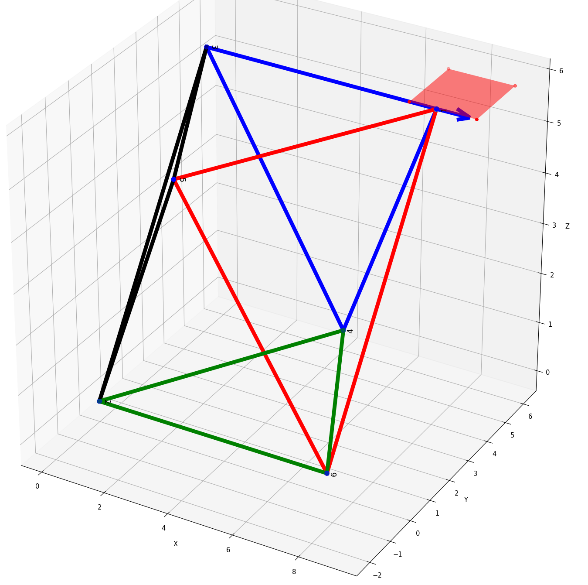
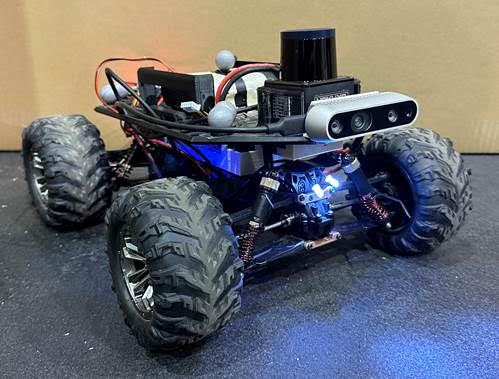

NSF Graduate Research Fellow
James Wade
Robotics M.S. Student · University of Michigan
I build robots that can adapt when the world changes. At Michigan’s Autonomous Robotic Manipulation (ARM) Lab, I study reliable world models, robot learning, and manipulation.
My current research asks how generative world models can adapt to unfamiliar physics and how robots can recognize when those models are wrong. Earlier work spans fault-tolerant soft robots, multi-robot autonomy at Sandia, and embedded systems at Lawrence Livermore.
I graduated from Brigham Young University in 2026, ranked 1st in a mechanical engineering class of 485, with a 4.0 GPA and minors in Computer Science and Mathematics.

NSF
Graduate Research
Fellow
>$275K
Research Funding Secured
Including NSF GRFP
2
National Lab
Internships
Selected Work
See all research →
Michigan · ARM Lab
Making Robot World Models More Reliable
Benchmarking world-model adaptation and developing error estimators for unfamiliar physics.

IEEE RA-L · 2026
Keeping Soft Robots Moving After Motor Failure
Retained over 62% of nominal workspace after motor failure; reduced tracking RMSE by over 22%.

Sandia National Laboratories
A Shared Autonomy Stack for Robot Teams
Built a modular ROS 2 stack spanning physical robots, Gazebo, and Isaac Sim.